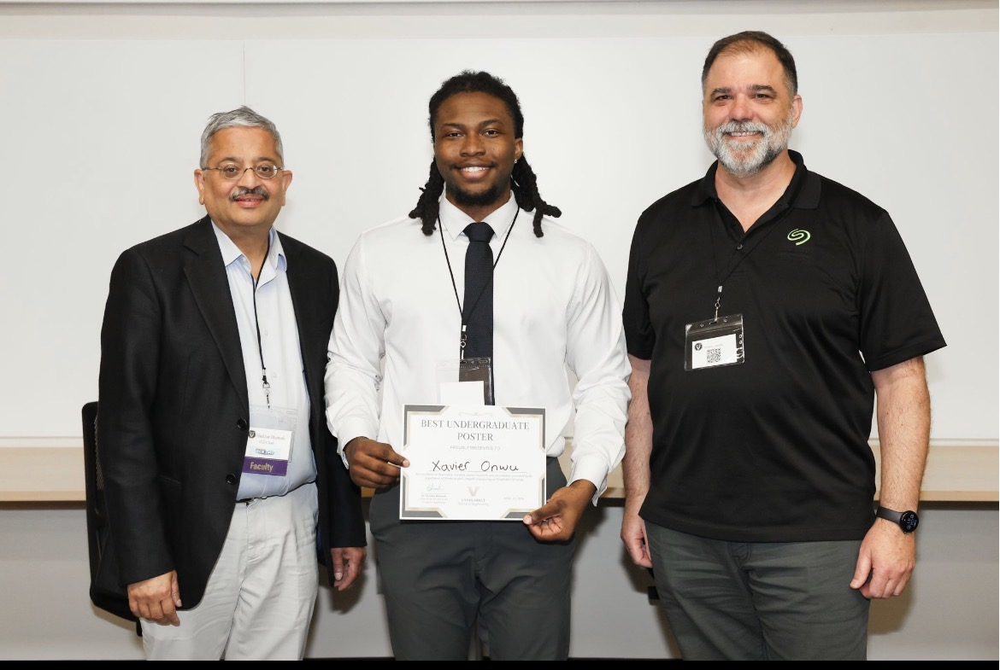
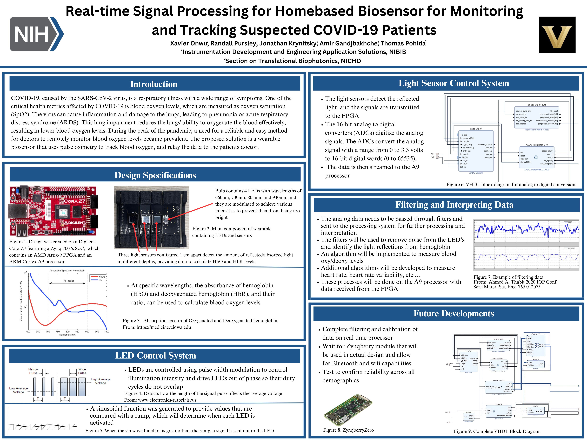

I am studying Electrical and Computer Engineering at Vanderbilt University. Outside of coursework, I conduct radiation effects research at the Institute for Space and Defense Electronics (ISDE) and contribute to the Vanderbilt Aerospace Design Laboratory (VADL), where I have designed, tested, and debugged flight hardware for the avionics and payload of a vehicle competing in the annual NASA USLI Competition. I also serve as the vice president and electrical lead of the Vanderbilt Robotics Team. Previously I have interned at the National Institutes of Health and Northrop Grumman, contributing to projects ranging from FPGA RTL development to analyzing antenna radiation patterns.
Sensor array and telemetry board for the Vanderbilt Robotics Team autonomous vehicle.
Breakout board for an STM32F4 microcontroller, designed to explore support circuitry and PCB layout.
RTL design converting microphone input into a VGA-based spectrum analyzer with a corresponding heatmap.
Designed and simulated a transmitter amplifier for a QRP texting circuit as part of a circuits course.
Generative design case study for a longboard hanger that doubles as a motor mount.
Class-based deep dive into top-down modeling using a detent mechanism phone holder as the subject.
Independent study exploring motor controller design, simulation, and closed-loop control.
Bare metal peripheral drivers for an STM32F4 microcontroller written in C without HAL abstractions.
